专题01 用数学思想方法解决线段与角中的计算问题的四种模型

目录
题型一：分类讨论思想在线段的计算中的应用 1
题型二：分类讨论思想在角的计算中的应用 7
题型三：整体思想及从特殊到一般的思想解决线段和差问题 14
题型四：整体思想及从特殊到一般的思想解决角和差问题 19

题型一：分类讨论思想在线段的计算中的应用
1．（24-25七年级上·辽宁抚顺·期末）已知 是直线
是直线 上的点，线段
上的点，线段 ，
，
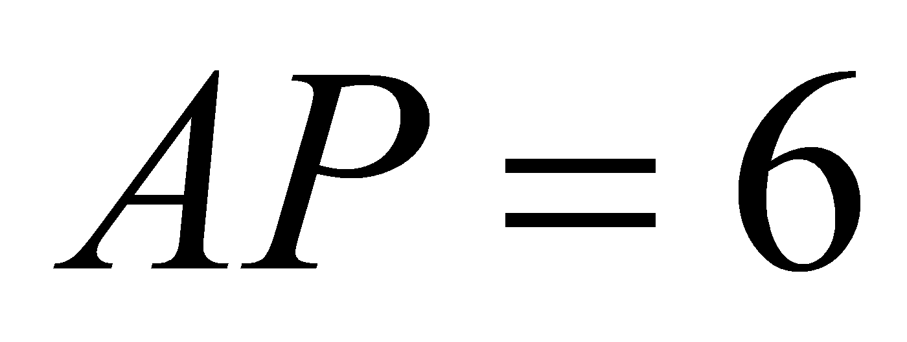
， 是线段
是线段 的中点，则线段
的中点，则线段 的长为 ．
的长为 ．2．（24-25七年级下·江苏南京·开学考试）已知点C为线段所在直线上一点，
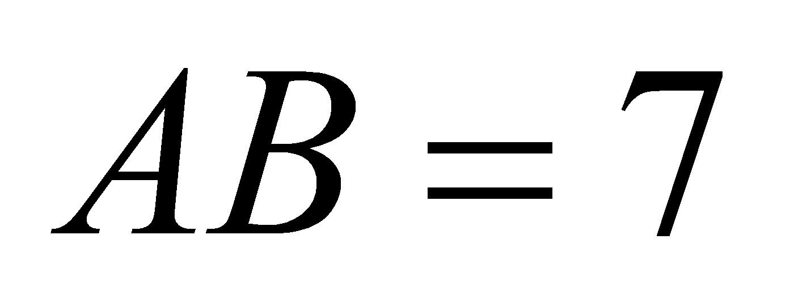
， ，点E为的中点，F为
，点E为的中点，F为 的中点．则
的中点．则 ．
．3．（24-25七年级上·全国·期末）点 ，
， ，
， 是直线
是直线 上三点，如果点
上三点，如果点 是线段
是线段 的中点，点
的中点，点 是线段
是线段 的中点，若
的中点，若 ，
， ，则
，则 ．
．
4．（24-25七年级上·山东青岛·期末）已知
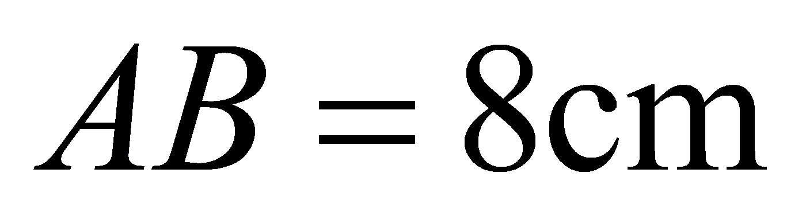
，点是直线上的一点，使得 ，、分别是线段的中点与
，、分别是线段的中点与 的中点，则线段
的中点，则线段 的长度是 ．
的长度是 ．5．（24-25七年级上·河南南阳·阶段练习）有公共端点P的两条线段 ，
， 组成一条折线
组成一条折线 ，若该折线上一点Q把这条折线分成相等的两部分，我们把这个点Q叫做这条折线的“折中点”．已知点D是折线
，若该折线上一点Q把这条折线分成相等的两部分，我们把这个点Q叫做这条折线的“折中点”．已知点D是折线 的“折中点”，点E为线段
的“折中点”，点E为线段 的中点，
的中点， ，
， ，则线段的长是
，则线段的长是
6．（24-25七年级上·陕西西安·阶段练习）如图，M是定长线段上一定点，点C在线段 上，点D在线段
上，点D在线段 上，点C、点D分别从点M、点B出发以
上，点C、点D分别从点M、点B出发以 、
、 的速度沿直线
的速度沿直线 向左运动，运动方向如箭头所示．若点C、D运动时，总有
向左运动，运动方向如箭头所示．若点C、D运动时，总有
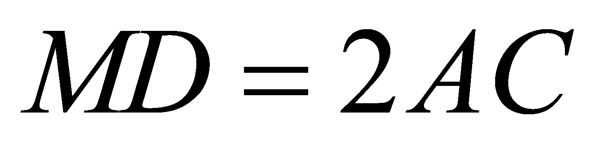
，N是直线上一点，且 ，则
，则 ．
．
7．（24-25七年级下·湖南衡阳·期中）如图，已知线段 ，
，
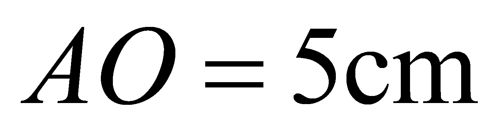
，半径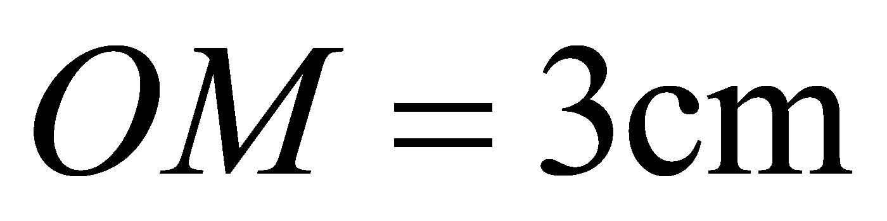
，当点在的上方，且 时，点绕着点
时，点绕着点 以每秒
以每秒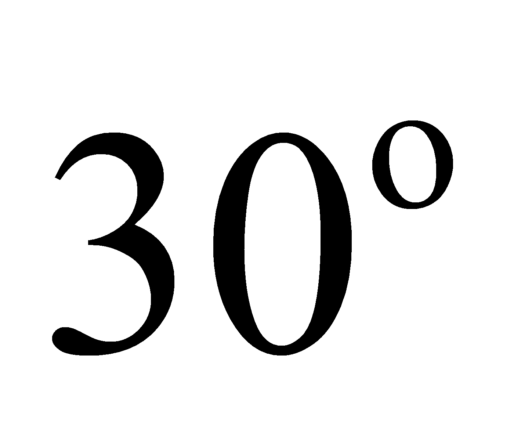
的速度在圆周上逆时针旋转一周后停止，同时点从点沿线段向点运动，若点、两点能相遇，则点的运动速度为 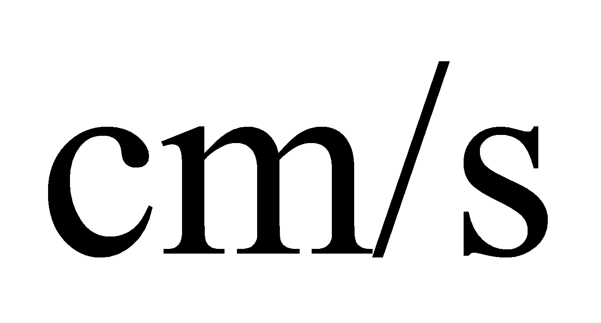
．
8．（24-25七年级上·河北唐山·期末）【新知理解】如图1，点在线段上，图中共有三条线段、和，若其中有一条线段的长度是另外一条线段长度的2倍，则称点是线段的“巧点”．比如：一条线段的中点是这条线段的“巧点”．
【问题解决】如图2，若 ，点是线段的巧点，则
，点是线段的巧点，则 cm．
cm．
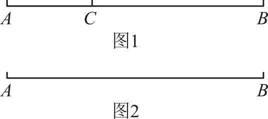
题型二：分类讨论思想在角的计算中的应用
9．（24-25七年级上·浙江绍兴·期末）如图，已知 ，
， 平分
平分 ，若内部存在一条射线
，若内部存在一条射线 ，满足
，满足 ，则
，则 ．
．

10．（24-25七年级上·河南南阳·期末）如图， ，平面内有一射线
，平面内有一射线 ，且
，且 ，若
，若 平分
平分 ，则
，则
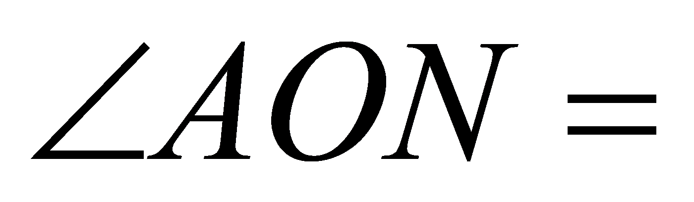
°．
11．（24-25七年级上·四川成都·期末）定义：过一个角的顶点在角的内部作一条射线，把这个角分成两个小角，且这两个小角的度数满足 倍关系，则称这条射线为这个角的“倍分线”．已知射线为的“倍分线”，若
倍关系，则称这条射线为这个角的“倍分线”．已知射线为的“倍分线”，若 ，则
，则 ．
．
12．（24-25七年级上·河南新乡·期末）如图，在直角三角形 中，
中， ，为射线上一点，且点沿射线方向移动．在点移动的过程中，当
，为射线上一点，且点沿射线方向移动．在点移动的过程中，当 时，
时，
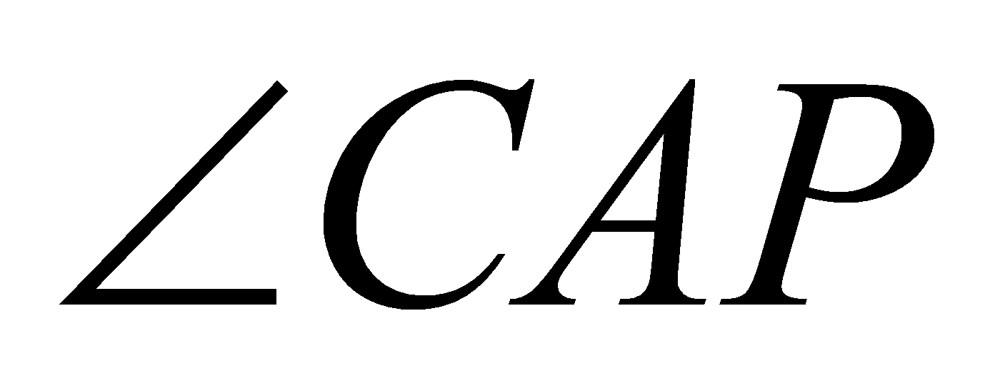
的度数为 ．
13．（24-25七年级上·江西景德镇·期末）如图，已知A，O，B三点共线， 平分
平分 ，
， ，过点O在
，过点O在 的内部作射线，若射线与
的内部作射线，若射线与 ，，中任意一条射线所成夹角为
，，中任意一条射线所成夹角为 时，
时， 的度数为 ．
的度数为 ．

14．（24-25七年级上·河南郑州·期末）一副三角板按如图方式摆放，点
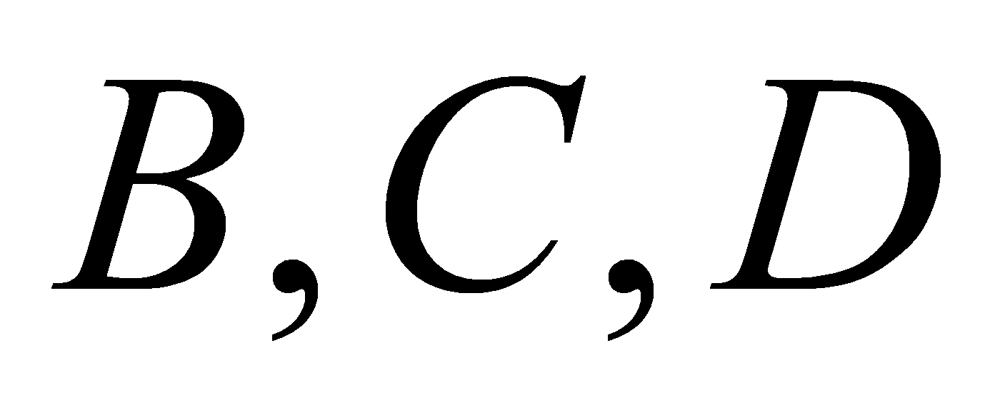
在同一条直线上，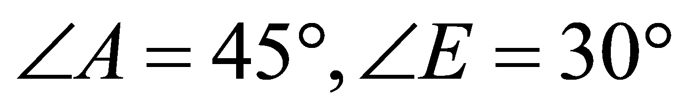
．现将三角板 绕点逆时针旋转一周，当所在直线恰好平分
绕点逆时针旋转一周，当所在直线恰好平分 时，三角板转过的角度为 ．
时，三角板转过的角度为 ．
15．（24-25七年级上·安徽安庆·期末）如图，射线在内，图中共有三个角 ，和，若其中一个角的度数是另外一个角的度数的2倍，则称射线是的“2倍线”．
，和，若其中一个角的度数是另外一个角的度数的2倍，则称射线是的“2倍线”．
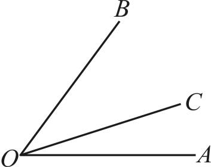
（1）一个角的平分线 这个角的“2倍线”（选填“是”或“不是”）；
（2）若 ，射线是的“2倍线”，则的度数为 ．
，射线是的“2倍线”，则的度数为 ．
16．（24-25七年级上·河南南阳·期末）如图①，射线在内部，图中共有三个角 ．若其中有两个角的度数之比为
．若其中有两个角的度数之比为 ，则称射线为的“幸运线”．如图②，若
，则称射线为的“幸运线”．如图②，若
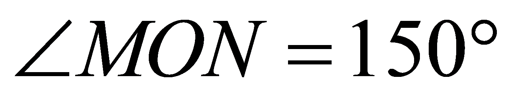
，射线 为
为 的“幸运线”，则
的“幸运线”，则 的度数是 ．
的度数是 ．
题型三：整体思想及从特殊到一般的思想解决线段和差问题
17．（23-24七年级上·辽宁铁岭·阶段练习）如图，已知点 在线段
在线段 上，点
上，点 分别是
分别是 的中点．
的中点．

(1)若 ，求线段
，求线段 的长；
的长；
(2)若点为线段上任一点，其它条件不变，你能猜想线段与的数量关系吗？并说明你的理由；
(3)若点在线段的延长线上，其它条件不变，你上述猜想的结论是否仍然成立？请画出图形，直接写出你的结论．
18.（24-25七年级上·全国·单元测试）A，B 两点在数轴上的位置如图所示，其中点 A 对应的有理数为 ，且
，且 ．动点 P 从点 A 出发，以每秒2个单位长度的速度沿数轴正方向运动，设运动时间为t秒（t
．动点 P 从点 A 出发，以每秒2个单位长度的速度沿数轴正方向运动，设运动时间为t秒（t ）．
）．

(1)当 时，
时， 的长为 ，点 P 表示的有理数为 ；
的长为 ，点 P 表示的有理数为 ；
(2)当 时，求t的值；
时，求t的值；
(3)M为线段的中点，N 为线段 的中点．在点 P 运动的过程中，线段的长度是否发生变化？若变化，请说明理由；若不变，求出线段的长．
的中点．在点 P 运动的过程中，线段的长度是否发生变化？若变化，请说明理由；若不变，求出线段的长．
19．（24-25七年级下·黑龙江大庆·开学考试）如图（1），已知点C在线段上，且 ．
．
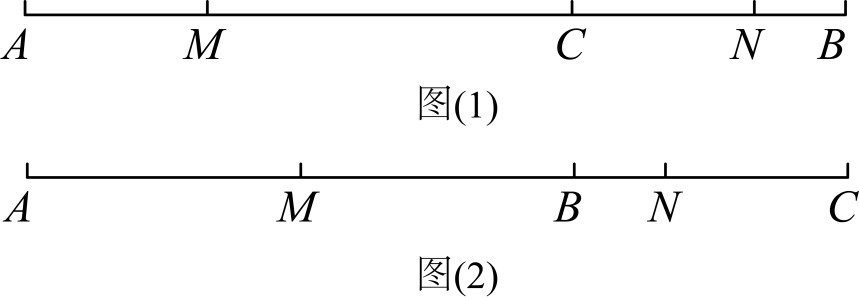
(1)若 ，求线段的长；
，求线段的长；
(2)若点C为线段上任意一点，其他条件不变，且满足 ，求线段 的长；
，求线段 的长；
(3)如图（2），若点C为线段延长线上任意一点，其他条件不变，且满足 ，求线段的长．
，求线段的长．
20．（23-24七年级上·江苏盐城·阶段练习）【感悟体验】如图 ，
，
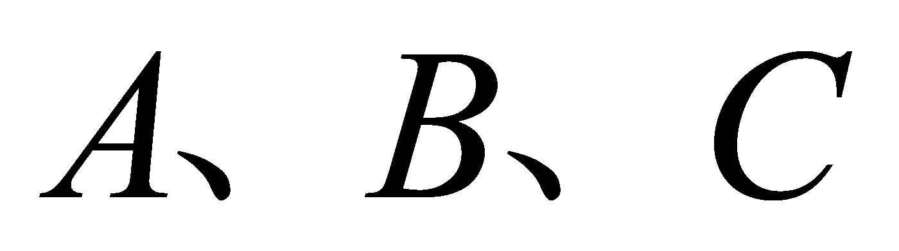
三点在同一直线上，点 在线段
在线段 的延长线上，且
的延长线上，且 ，请仅用一把圆规在图中确定点的位置．
，请仅用一把圆规在图中确定点的位置．【认识概念】在同一直线上依次有 四点，且，那么称与
四点，且，那么称与 互为“对称线段”，其中为的“对称线段”，亦为的“对称线段”．
互为“对称线段”，其中为的“对称线段”，亦为的“对称线段”．
如图 ，下列情形中与互为“对称线段”的是 （直接填序号）．
，下列情形中与互为“对称线段”的是 （直接填序号）．
 ；
；
 ；
；
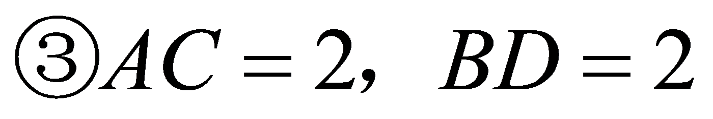
．【运用概念】如图 ，与互为“对称线段”，点
，与互为“对称线段”，点 为的中点，点
为的中点，点 为
为 的中点，且
的中点，且 ．
．
（1）若 ，求
，求 的长；
的长；
（2）若 ，求的长；
，求的长；
【拓展提升】如图 ，在同一直线上依次有四点，
，在同一直线上依次有四点，
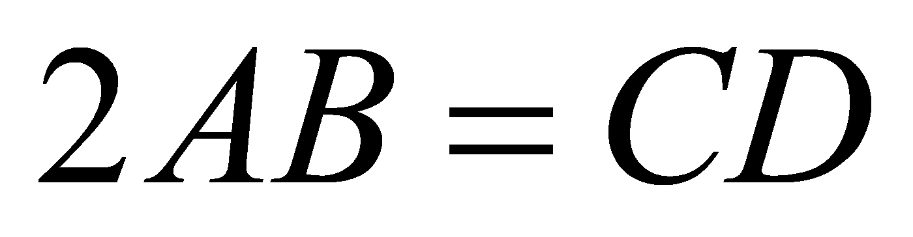
且 （
（ 为常数），点为的中点，点在上且
为常数），点为的中点，点在上且 ．是否存在
．是否存在 的值使得的长为定值？若存在，请求出的值以及这个定值（用含的代数式表示）；若不存在，请说明理由．
的值使得的长为定值？若存在，请求出的值以及这个定值（用含的代数式表示）；若不存在，请说明理由．
题型四：整体思想及从特殊到一般的思想解决角和差问题
21．（24-25七年级上·辽宁鞍山·期末）如图，已知 ，
， ，
， 平分
平分 ，
， 平分
平分 ．
．
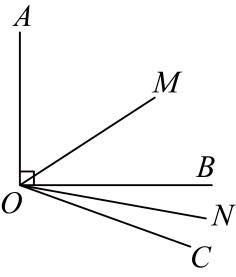
(1)求 的度数．
的度数．
(2)若将题干中的改为 ，其余条件不变，求的度数；
，其余条件不变，求的度数；
(3)若将题干中的改为 （β为锐角），其余条件不变，求的度数．
（β为锐角），其余条件不变，求的度数．
(4)从前面的结果中，你能得出什么结论？
22．（23-24七年级上·贵州六盘水·期末）如图①所示， ，将直角三角板的直角顶点放置在O点，
，将直角三角板的直角顶点放置在O点， 平分
平分 ．
．
(1)若 ，则
，则 ______，
______， ______．
______．
(2)如果 ，
， ，试判断
，试判断 ，
， 的数量关系，并说明理由．
的数量关系，并说明理由．
(3)如图②当直角三角板绕着O点顺时针旋转一定角度，使得在的内部，在的外部，若，，，是否还存在（2）中的数量关系，若存在，请说明理由，若不存在，请求出，的数量关系．
23．（24-25七年级上·黑龙江哈尔滨·阶段练习）【问题驱动】已知O是直线上的一点， ，
， 平分．
平分．
（1）如图1，若 ，求
，求 的度数；
的度数；
（2）如图1，若 ，则的度数为______（用含有的式子表示）不必说明理由；
，则的度数为______（用含有的式子表示）不必说明理由；
【拓广探索】
（3）将图1中的 绕顶点O顺时针旋转至图2的位置，试探究和度数之间的关系，写出你的结论，并说明理由．
绕顶点O顺时针旋转至图2的位置，试探究和度数之间的关系，写出你的结论，并说明理由．
（4）将图1中的绕顶点O逆时针旋转至图3的位置，其它条件不变，若，则的度数为______（用含有的式子表示），不必说明理由．
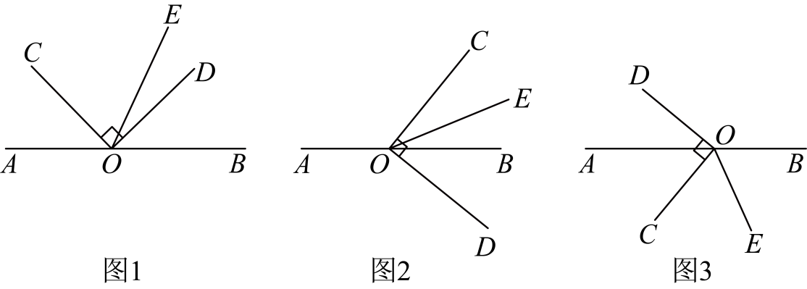
24．（23-24七年级上·河南郑州·期末）综合与探究
【问题情境】
将一副三角尺按如图1所示位置摆放，三角尺 中，，
中，， ；三角尺
；三角尺 中，
中， ，
， ，
， ．分别作
．分别作
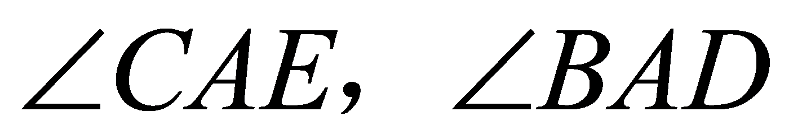
的角平分线 ．
．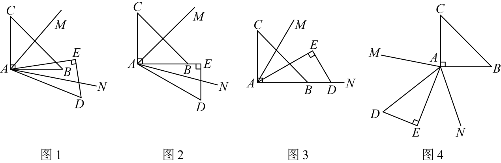
【初步探究】
现将三角尺按照图2，图3所示的方式摆放，仍然是的角平分线．在图2中与 重合，在图3中
重合，在图3中 与
与 重合在一起．
重合在一起．
（1）计算：图2中
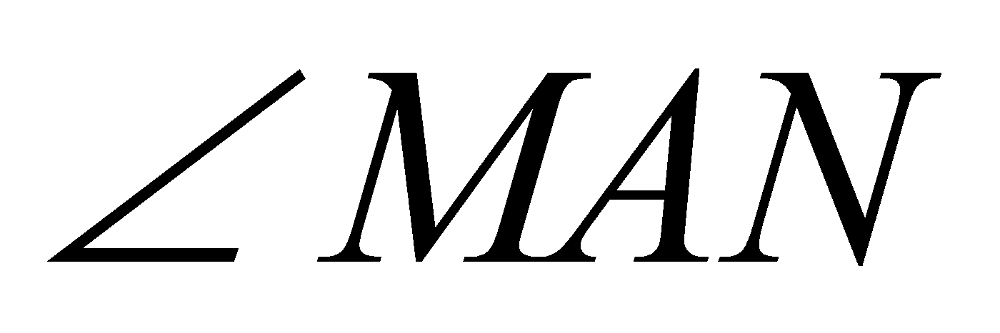
的度数为___________°，图3中的度数为___________°（直接写出答案）．【深入探究】
（2）通过初步探究，请你猜想图1中的度数为___________°．
如果设 ，请求出图1中的度数．
，请求出图1中的度数．
【类比拓展】
（3）再将三角尺按照图4所示的方式摆放，仍然是的平分线．请你求出的度数．